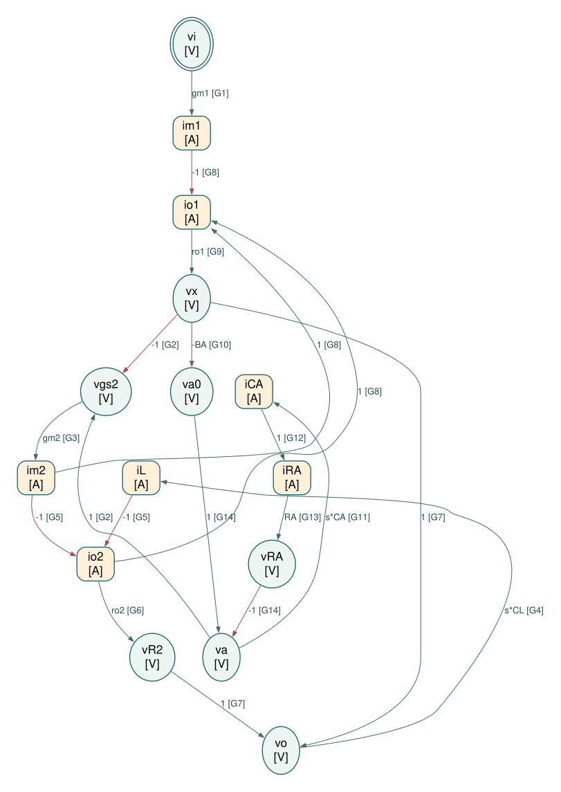

调节型共源共栅级与增益增强的动态模型
对应：0262–0264。
独立 Physical / Causal SFG Markdown
A. 选取的 SFG 节点及选择理由
本图对应本项目已运行的 gainboost_slow / gainboost_fast Spectre 等效电路：M1 源极接地，M2 源极为 vx、栅极为 va、漏极为 vo，输出接 CL。忽略体效应、中间节点电容和其余寄生，保留有限 ro1、ro2。辅助级由理想反相 VCVS、串联 RA 和输出对地 CA 构成；VA0 是受控源输出，va 是 RC 节点。BA 是这个独立受控源的常数增益参数，不是整体传递函数，不以未知内部 MOS 拓扑代替该受控源。im1、io1 从 vx 流向地；im2、io2 从 vo 流向 vx；iL 从 vo 流向地；iRA 从 va0 经 RA 流向 va，iCA 从 va 流向地。
所有量为工作点附近的小信号，电容采用零初始条件的拉普拉斯关系。按局部器件关系选择因果方向，不预先求整体传递函数，也不消元为最少节点图。
| 节点 | 类型 | 选择理由 |
|---|---|---|
（vi） |
电压 / V | 独立输入电压。 |
（im1） |
电流 / A | 输入管 M1 的跨导电流。 |
（io1） |
电流 / A | M1 输出电阻 ro1 的电流。 |
（vx） |
电压 / V | 真实中间节点，辅助级的采样电压。 |
（va0） |
电压 / V | 已有网表中理想 VCVS 的输出，保留受控源自身的电压因果方向。 |
（iCA） |
电流 / A | 辅助级电容电流。 |
（iRA） |
电流 / A | 辅助级串联电阻电流，由输出节点 KCL 决定。 |
（va） |
电压 / V | 辅助级 RC 节点，驱动 M2 栅极。 |
（vgs2） |
电压 / V | M2 栅源端电压。 |
（im2） |
电流 / A | M2 从输出注入中间节点的跨导电流。 |
（iL） |
电流 / A | 输出负载电容电流。 |
（io2） |
电流 / A | ro2 支路电流，由输出 KCL 决定。 |
（vR2） |
电压 / V | ro2 从漏极到源极的压降。 |
（vo） |
电压 / V | 真实输出节点电压。 |
（vRA） |
电压 / V | 辅助级串联 RA 的压降，显式保留 i → v。 |
B. 独立约束
每行是一个独立局部约束，整理为 。右侧的每一项生成一条边；一行分成多条边不等于重复使用约束。
| 约束 | 物理来源 | 定向方程 |
|---|---|---|
| G1 | M1 跨导源的本构关系 | |
| G2 | M2 栅源端电压定义（KVL） | |
| G3 | M2 跨导源的本构关系 | |
| G4 | CL 的本构关系 | |
| G5 | 输出节点 KCL | |
| G6 | ro2 的本构关系 | |
| G7 | M2 漏源支路 KVL | |
| G8 | 中间节点 vx 的 KCL | |
| G9 | ro1 的本构关系 | |
| G10 | 理想 VCVS 的本构关系 | |
| G11 | CA 的本构关系 | |
| G12 | 辅助级 RC 输出节点 KCL | |
| G13 | RA 的本构关系 | |
| G14 | 辅助级串联支路 KVL |
电阻只使用 这一方向，不再同时添加 ；同一电容的支路电流可以出现在两端节点的 KCL 中，但其本构关系只建一次。 本图保留有限输出电阻以采用“电流 → 电压”的电阻方向。若另取输出电导严格为零的理想模型，应重新分配约束方向，不能直接在图上使用无穷大的电阻。
C. SFG edge list
E01: vi --(gm1)--> im1 [G1]
E02: va --(1)--> vgs2 [G2]
E03: vx --(-1)--> vgs2 [G2]
E04: vgs2 --(gm2)--> im2 [G3]
E05: vo --(s*CL)--> iL [G4]
E06: im2 --(-1)--> io2 [G5]
E07: iL --(-1)--> io2 [G5]
E08: io2 --(ro2)--> vR2 [G6]
E09: vx --(1)--> vo [G7]
E10: vR2 --(1)--> vo [G7]
E11: im2 --(1)--> io1 [G8]
E12: io2 --(1)--> io1 [G8]
E13: im1 --(-1)--> io1 [G8]
E14: io1 --(ro1)--> vx [G9]
E15: vx --(-BA)--> va0 [G10]
E16: va --(s*CA)--> iCA [G11]
E17: iCA --(1)--> iRA [G12]
E18: iRA --(RA)--> vRA [G13]
E19: va0 --(1)--> va [G14]
E20: vRA --(-1)--> va [G14]
D. ASCII SFG
以下按目标节点分组绘制，重复出现的变量名指同一个节点；所有连接均列出。V 为电压节点，A 为电流节点。
vi --(gm1)--> im1 [A] (G1)
va --(1)---+
|
vx --(-1)--+--> vgs2 [V] (G2)
vgs2 --(gm2)--> im2 [A] (G3)
vo --(s*CL)--> iL [A] (G4)
im2 --(-1)--+
|
iL --(-1)---+--> io2 [A] (G5)
io2 --(ro2)--> vR2 [V] (G6)
vx --(1)---+
|
vR2 --(1)--+--> vo [V] (G7)
im2 --(1)---+
|
io2 --(1)---+
|
im1 --(-1)--+--> io1 [A] (G8)
io1 --(ro1)--> vx [V] (G9)
vx --(-BA)--> va0 [V] (G10)
va --(s*CA)--> iCA [A] (G11)
iCA --(1)--> iRA [A] (G12)
iRA --(RA)--> vRA [V] (G13)
va0 --(1)---+
|
vRA --(-1)--+--> va [V] (G14)

图中椭圆为电压节点，圆角矩形为电流节点，双边框为独立输入。每条边显示系数和约束编号；按图中箭头读取方向。
打开 SVG 矢量图 · DOT 连接文本 · 机器可读边表
{kind=link}
E. 主要正向通路与反馈环路
- 输入作用先经 vi → im1 → io1 → vx；vx 再通过 M2 的端电压与支路电流影响 vo。输出电阻支路的方向由电流 io2 → 压降 vR2 → vo 保留，不将其压缩成多器件电压增益。
- 增益增强局部负反馈：vx → va0 → va → vgs2 → im2 → io1 → vx。其中 vx → va0 的系数为 −BA，因此 vx 增大使辅助级输出降低，再使注入 vx 的 im2 减小。
- 辅助级电容返回路径为 va → iCA → iRA → vRA → va；输出负载路径为 vo → iL → io2 → vR2 → vo。前者的负号来自 KVL，后者来自 KCL；各电容仅使用一次电压到电流的本构约束。
- 本图保留已有网表中的理想受控源及其 RA、CA，不把它们合并成 −B(s)，也不使用 gm2/(go2+sCL) 一类组合边。若之后获得辅助运放内部电路，应按其独立器件约束替换 VCVS 节点。
F. 逐边对应独立约束检查
| 边 | 起点 → 终点 | 系数 | 唯一来源约束 |
|---|---|---|---|
| E01 | G1：M1 跨导源的本构关系 | ||
| E02 | G2：M2 栅源端电压定义（KVL） | ||
| E03 | G2：M2 栅源端电压定义（KVL） | ||
| E04 | G3：M2 跨导源的本构关系 | ||
| E05 | G4：CL 的本构关系 | ||
| E06 | G5：输出节点 KCL | ||
| E07 | G5：输出节点 KCL | ||
| E08 | G6：ro2 的本构关系 | ||
| E09 | G7：M2 漏源支路 KVL | ||
| E10 | G7：M2 漏源支路 KVL | ||
| E11 | G8：中间节点 vx 的 KCL | ||
| E12 | G8：中间节点 vx 的 KCL | ||
| E13 | G8：中间节点 vx 的 KCL | ||
| E14 | G9：ro1 的本构关系 | ||
| E15 | G10：理想 VCVS 的本构关系 | ||
| E16 | G11：CA 的本构关系 | ||
| E17 | G12：辅助级 RC 输出节点 KCL | ||
| E18 | G13：RA 的本构关系 | ||
| E19 | G14：辅助级串联支路 KVL | ||
| E20 | G14：辅助级串联支路 KVL |
共 15 个节点、14 个独立约束、20 条边。每个非输入节点只有一个定义方程；每条边属于唯一约束。边系数仅含单个器件的本构参数（包括理想受控源的常数增益）、电容导纳或带符号的 1。
本节输出止于 Physical / Causal SFG，不进一步化为 algebraic SFG。
原有公式推导与必要近似（展开查看）
连接与负号
M1 源极接地，M2 源极接中间节点 。辅助放大器的正端接 AC 地参考，负端接 ，输出驱动 M2 栅极：
因此 上升会使 M2 栅极下降，是此局部环路的负反馈。先忽略体效应与中间节点电容，保留 M1、M2 的 和输出 。
定义 、，KCL：
代入 ，得到
此式在 是任意已指定的传输函数时成立，但仍不包含辅助放大器输出阻抗及额外寄生。
DC 增益增加的每一步
输入置零的漏极测试给
DC 电压增益：
依序省去两个 1，才得到教材：
0262 若用一个 M3 共源级作辅助放大器，理想偏置源负载下 ，便出现三个本征增益的乘积。
中间节点阻抗的叙述须指定输出终端。输出被固定在 AC 地时， ，确实降低。若输出在 DC 完全开路且只有理想电流源，输入 的电流最终仍经 流走，。不能省略终端条件而把「中点阻抗降低」当成所有情况的定律。
保留辅助放大器的一个极点
取
乘掉公共分母后：
分母系数：
辅助放大器引入的零点为
它在左半平面，不能与米勒 右半平面 零点混淆。两个极点由 求。
0264 的带宽对齐不是通用等式
将此零点代入完整分母，精确相消要求
右侧是 ，不是未增益提升共源共栅级的主极点 。
所以原文「辅助 GBW 必须恰好等于原共源共栅级 BW」不能由本页的单极点 模型普遍推出。它属特定设计图的简化说明，完整设计仍须指定所有内部极点、检查环路稳定性和阶跃响应。本轮不把这句话标成已证明的设计准则。
必要近似
- 才可把 换成 。
- 才可省去 DC 增益最外层的 1。
- 用单管 M3 的 代表 ，须忽略其负载并保留有效偏置。
- 「GBW 不变」要求主电路交越附近仍由输入有效跨导与 支配，辅助环路没有新共振或额外高频限制。
- 一个极点的 是指定模型，不是所有辅助运放的精确描述。
符号检查验证 DC 阻抗、SFG、二阶式及极零相消条件。
来源对照
| 幻灯片 | PDF 页 | 书本页 | 讲解所在 PDF 页 |
|---|---|---|---|
| 0262 | 81 | 82 | 81 |
| 0263 | 82 | 83 | 82 |
| 0264 | 82 | 83 | 82 |
Spectre 仿真结果
本推导组的代表模型已完成 Spectre 验证；覆盖范围以所列网表为准，未逐一搭建所有幻灯片电路。
线性 AC 2 · MOS 电路 0 · 极零 1 · 瞬态 0：所列检查全部通过。
案例：gainboost_slow、gainboost_fast、gainboost_slow
{kind=link}
{kind=link}
{kind=link}